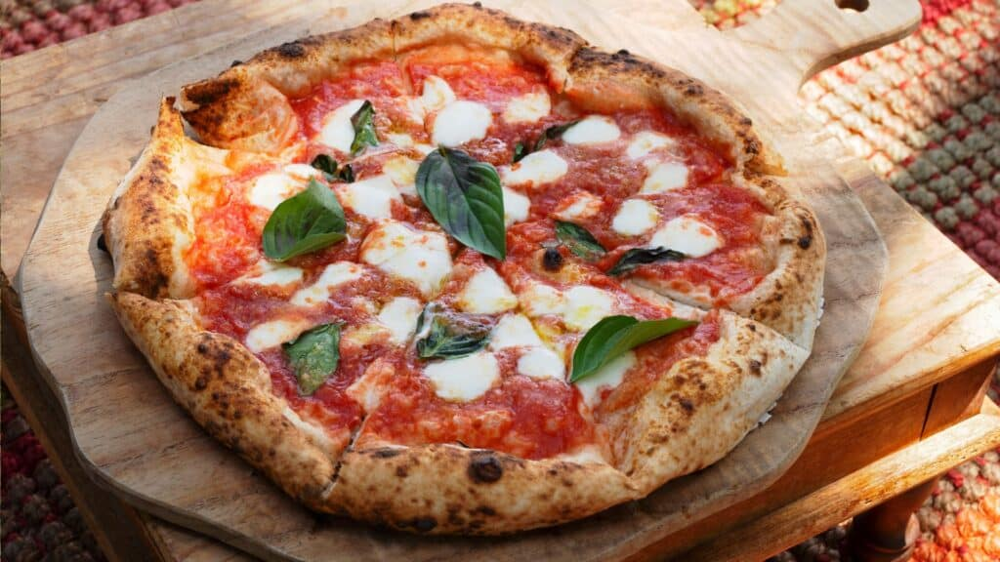

Stone-Baked Pizzas

House Special Pizza Classic
A hand-stretched pizza base baked to golden perfection, layered with creamy Caesar emulsion, tender romaine-inspired toppings,
and a rich snowfall of aged Parmesan. Finished with crispy garlic crouton-style crunch and a bright citrus touch, with an
optional topping of flame-grilled chicken for added depth and flavor.
Calories & Nutrition
- Calories: 700–1,050 kcal (with or without chicken)
- Serving Size: 1 pizza (10–12 inch)
- Protein: 20–45g
- Carbohydrates: 80–120g
- Fat: 25–55g
- Allergens: Contains gluten, dairy, and egg (anchovy optional in sauce)
- Main Ingredients:Pizza dough, Caesar sauce, romaine-inspired toppings, crouton crunch, Parmesan cheese, lemon
Ingredients
- Pizza dough – Hand-stretched, oven-baked base
- Tomato sauce – Rich, seasoned tomato blend
- Fresh greens – Added after baking for a crisp finish
- Crouton crunch – Toasted garlic bread pieces for texture
- Mozzarella cheese – Melted, golden cheese layer
- Fresh basil – Aromatic green basil leaves
- Olive oil – Light drizzle for flavor and shine
Allergen Notice:
Please inform us of any food allergies before ordering.
Kitchen Notice:
Prepared in a kitchen that handles gluten, dairy, and eggs.
← Back to Menu
Order Now